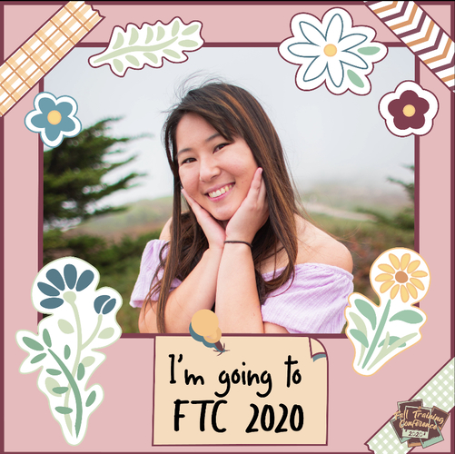
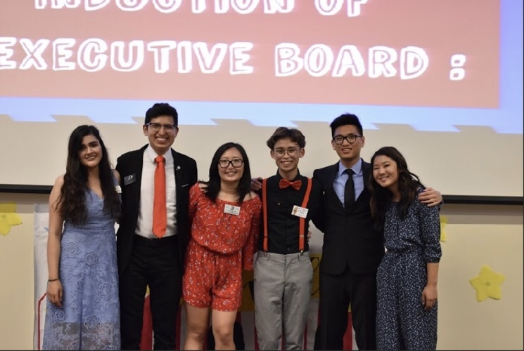
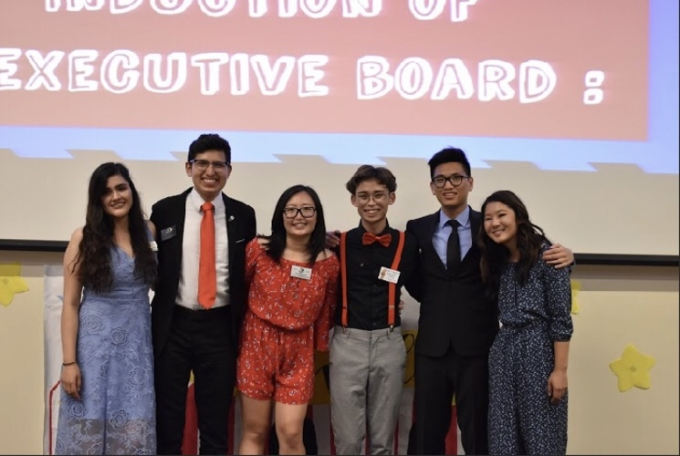
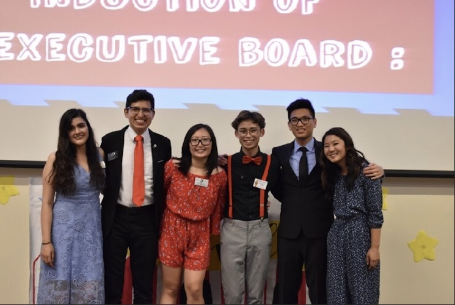

Amy Kobayashi
I have had many leadership experiences that allow me to grow as an individual. Here are a few of the amazing opportunities I have had. I am currently in an organization called Circle K International. It is part of the Kiwanis branch. I have been part of that organization for four years now and during my time in the club, I have had many leadership positions. The first one is I was the Communications and Outreach chair. That position allowed me to post information and member spotlights on my division's social media pages. That includes Instagram, Facebook, and Snapchat. I also took pictures and videos from division events, edit them, and post them on the division's YouTube account. I also attended monthly meetings with my divisional leadership team to dicsuss monthly assignments and service event ideas for the division. Another position that I had in the club is the role of secretary. I worked with multiple excel sheets and learned how to organize a Google Drive. I also took notes at every single meeting we had and took attendance as well. The last position I held during my time in the club is my most recent one and I was the Team Activities Chair for this annual event we have called Fall Training Conference. I had a co-chair our task was to come up with team activities for all the members to play during our event. Because this happened during COVID, we had to make the events accessible to an online format.
Education: Temecula Valley High School, Temecula CA - High School Diploma, June 2017. University of California Riverside, Riverside, CA Linguistics Candidate, Expected graduation, June 2021
Additional Skills: Trilingual (English, Japanese, and American Sign Language) and Comupter (Microsoft Office and social media)
Experience
Teaching Assistant
• Ran sessions to help students learn how to code
• Reviewed and graded student coding projects
• Created educational content to help promote student education
• TA'd for over 400 students each academic quarter
Education
UC Riverside
University of California Riverside
University of California Riverside
Portfolio

 

